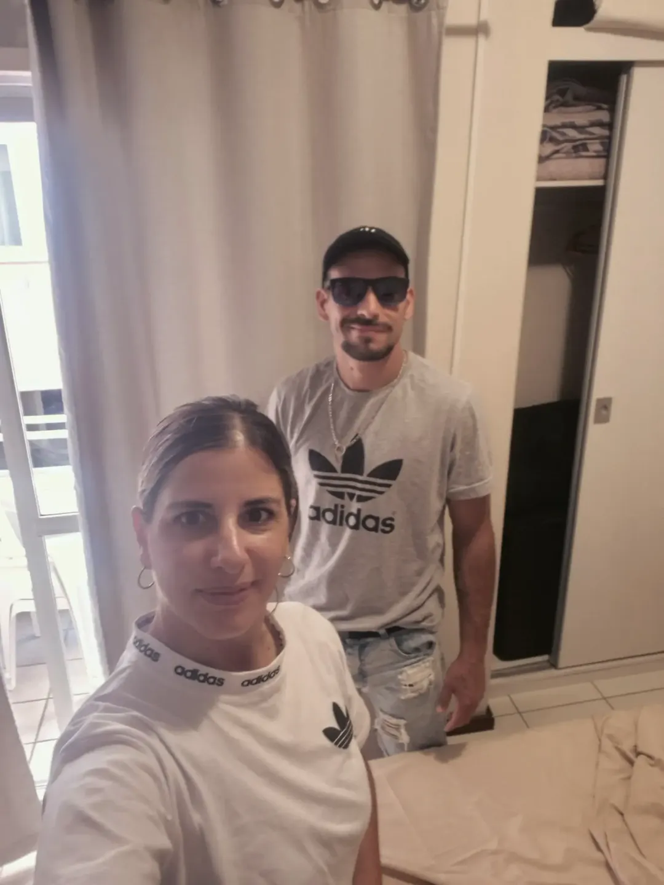
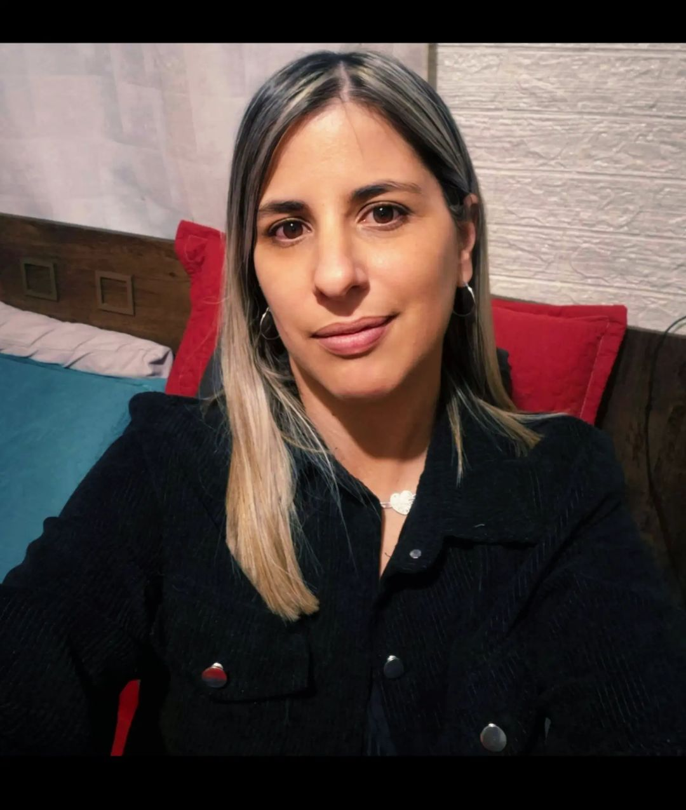
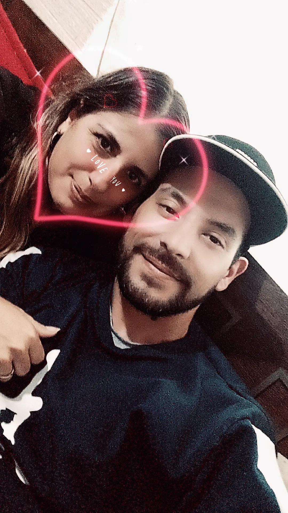
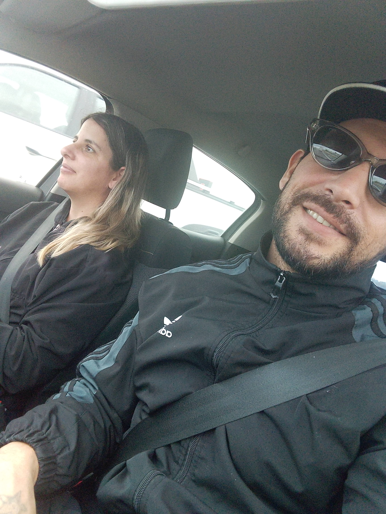

♥
UN REGALO HECHO CON AMOR
Para Daisy
Hay personas que hacen más bonito nuestro mundo. Esta pequeña sorpresa es para vos.
Con amor, Kevin Artega
Nuestros recuerdos 📸




Nuestros momentos más lindos, guardados con cariño.
Una carta para vos 💌
Mi Daisy…
A veces las palabras no alcanzan para explicar lo que una persona significa en nuestra vida, pero hoy quiero intentarlo.
Quiero que sepas que sos alguien muy especial para mí. No solamente por tu sonrisa, por tu mirada o por esos pequeños detalles que te hacen única, sino por todo lo que significás en mi corazón.
No quiero prometerte una historia perfecta, porque sé que la vida tiene momentos difíciles. Quiero prometerte algo mucho más sincero: mis ganas de seguir eligiéndote, cuidarte, acompañarte y construir momentos hermosos a tu lado.
Si pudiera volver a elegir, volvería a querer conocerte, volvería a buscar tu sonrisa y volvería a elegir compartir este camino con vos.
Gracias por cada recuerdo, cada abrazo, cada momento y por formar parte de mi vida.
Quiero que nunca dudes de lo importante que sos para mí.
Te amo, Daisy. Y si hay algo que deseo es que todavía nos queden muchísimas historias bonitas por vivir juntos.
Con todo mi amor,
Kevin Artega ❤️
Kevin Artega ❤️
Nuestra canción 🎶
“Por Primera Vez” — Camilo
Escuchar nuestra canción ♫Se abrirá Spotify para reproducirla.
♥
Sos parte de mis momentos más lindos.
Kevin Artega